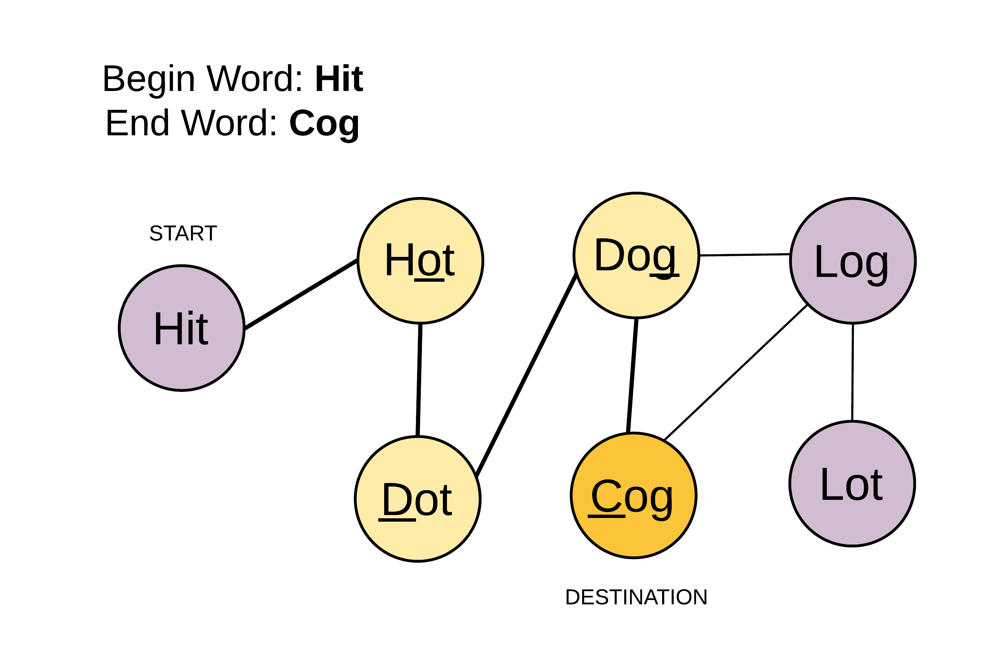

127. Word Ladder
通过 Word Ladder - LeetCode 讲解，竟然可以抽象成无向无权图，然后通过 Queue 将其串联起来，实在好精巧。


Given two words (beginWord and endWord), and a dictionary’s word list, find the length of shortest transformation sequence from beginWord to endWord, such that:
-
Only one letter can be changed at a time.
-
Each transformed word must exist in the word list. Note that beginWord is not a transformed word.
Note:
-
Return 0 if there is no such transformation sequence.
-
All words have the same length.
-
All words contain only lowercase alphabetic characters.
-
You may assume no duplicates in the word list.
-
You may assume beginWord and endWord are non-empty and are not the same.
Example 1:
Input: beginWord = "hit", endWord = "cog", wordList = ["hot","dot","dog","lot","log","cog"] Output: 5 Explanation: As one shortest transformation is "hit" -> "hot" -> "dot" -> "dog" -> "cog", return its length 5.
Example 2:
Input: beginWord = "hit" endWord = "cog" wordList = ["hot","dot","dog","lot","log"] Output: 0 Explanation: The endWord "cog" is not in wordList, therefore no possible* *transformation.
package com.diguage.algorithm.leetcode;
import javafx.util.Pair;
import java.util.*;
/**
* = 127. Word Ladder
*
* https://leetcode.com/problems/word-ladder/[Word Ladder - LeetCode]
*
* Given two words (beginWord and endWord), and a dictionary's word list, find the length of shortest transformation sequence from beginWord to endWord, such that:
*
* . Only one letter can be changed at a time.
* . Each transformed word must exist in the word list. Note that beginWord is not a transformed word.
*
* *Note:*
*
* * Return 0 if there is no such transformation sequence.
* * All words have the same length.
* * All words contain only lowercase alphabetic characters.
* * You may assume no duplicates in the word list.
* * You may assume beginWord and endWord are non-empty and are not the same.
*
* .Example 2:
* [source]
* ----
* Input:
* beginWord = "hit",
* endWord = "cog",
* wordList = ["hot","dot","dog","lot","log","cog"]
*
* Output: 5
*
* Explanation: As one shortest transformation is "hit" -> "hot" -> "dot" -> "dog" -> "cog",
* return its length 5.
* ----
*
* .Example 2:
* [source]
* ----
* Input:
* beginWord = "hit"
* endWord = "cog"
* wordList = ["hot","dot","dog","lot","log"]
*
* Output: 0
*
* Explanation: The endWord "cog" is not in wordList, therefore no possible transformation.
* ----
*
* @author D瓜哥, https://www.diguage.com/
* @since 2020-01-25 18:43
*/
public class _0127_WordLadder {
/**
* Runtime: 43 ms, faster than 80.36% of Java online submissions for Word Ladder.
*
* Memory Usage: 49.1 MB, less than 5.11% of Java online submissions for Word Ladder.
*
* Copy from: https://leetcode.com/problems/word-ladder/solution/[Word Ladder solution - LeetCode]
*/
public int ladderLength(String beginWord, String endWord, List<String> wordList) {
int L = beginWord.length();
Map<String, List<String>> allComboDict = new HashMap<>();
wordList.forEach(word -> {
for (int i = 0; i < L; i++) {
String newWord = word.substring(0, i) + "*" + word.substring(i + 1, L);
List<String> transformations = allComboDict.getOrDefault(newWord, new ArrayList<>());
transformations.add(word);
allComboDict.put(newWord, transformations);
}
});
Queue<Pair<String, Integer>> Q = new LinkedList<>();
Q.add(new Pair<>(beginWord, 1));
Map<String, Boolean> visited = new HashMap<>();
visited.put(beginWord, true);
while (!Q.isEmpty()) {
Pair<String, Integer> node = Q.remove();
String word = node.getKey();
Integer level = node.getValue();
for (int i = 0; i < L; i++) {
String newWord = word.substring(0, i) + "*" + word.substring(i + 1, L);
for (String adjacentWord : allComboDict.getOrDefault(newWord, Collections.emptyList())) {
if (adjacentWord.equals(endWord)) {
return level + 1;
}
if (!visited.containsKey(adjacentWord)) {
visited.put(adjacentWord, true);
Q.add(new Pair<>(adjacentWord, level + 1));
}
}
}
}
return 0;
}
public static void main(String[] args) {
_0127_WordLadder solution = new _0127_WordLadder();
int r1 = solution.ladderLength("hit", "cog", Arrays.asList("hot", "dot", "dog", "lot", "log", "cog"));
System.out.println((r1 == 5) + " : " + r1);
}
}